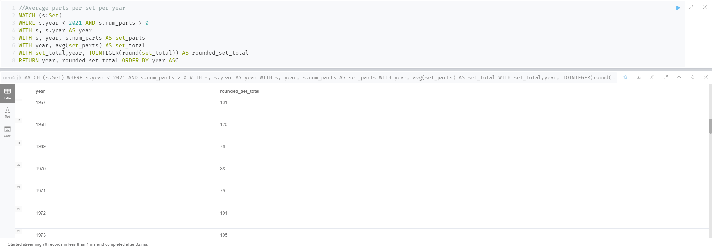

Neo4j LEGO Database Group 3
This data is gathered from the Rebrickable database and follows the schema found below.
This cypher query gets the data for the average number of parts for all sets in a given year.
What this graph shows is an increasing trend since LEGO was founded with a few outlier year.
Note that the data is not weighted against the number of sets released in that year. e.g. 1950 had 1 set
therefore not being an accurate representation compared to other years.
Our database does not provide the information necessary to give a strong corelation to why the amount increases,
but it could be due to the average skill of the builder
increasing, LEGO increasing the number of unique parts to add detail, bigger sets may sell better, and LEGO can
increase the price for larger sets.

Most common colors of all time
This bar graph represents the distribution of brick colors of all time. There are 173 colors total in our
database, but because of our choice of graph, we limited it to the top 20.
Number of sets per theme released in a year
This "bar graph race" shows the number of sets in specific themes release per year. This shows a trend of
popular themes at a given point in time. The second cypher query show the total sets released per theme of all
time. This is based off of the the same data as in the first query.